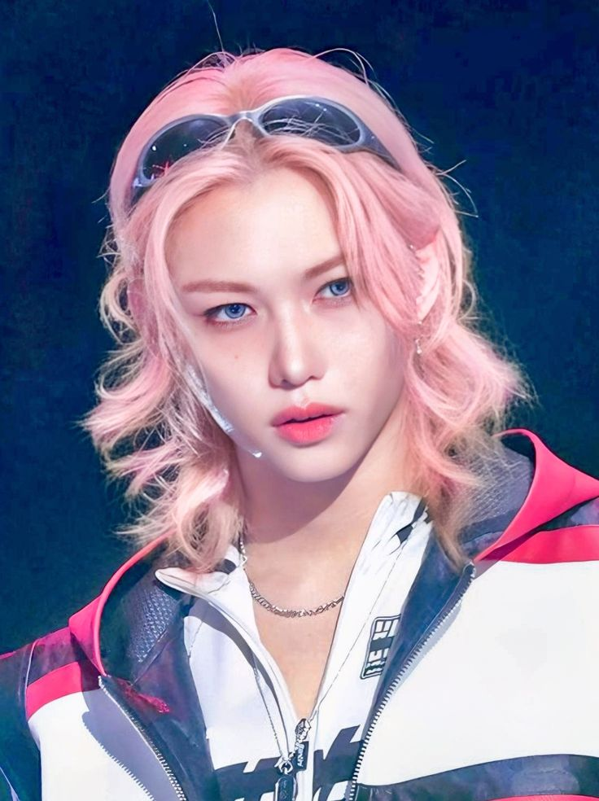
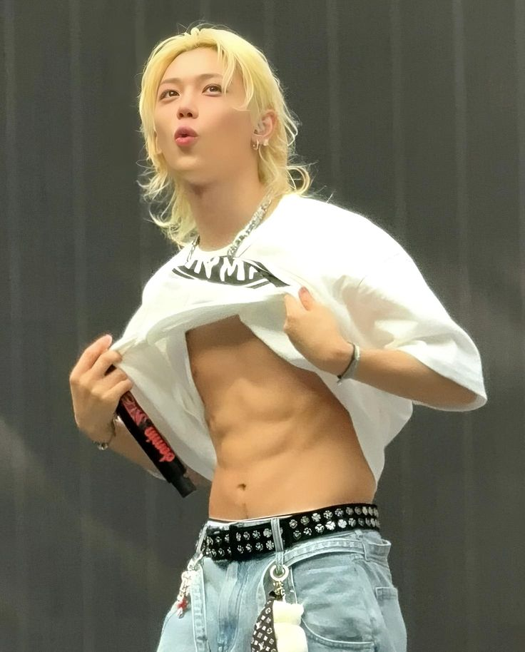
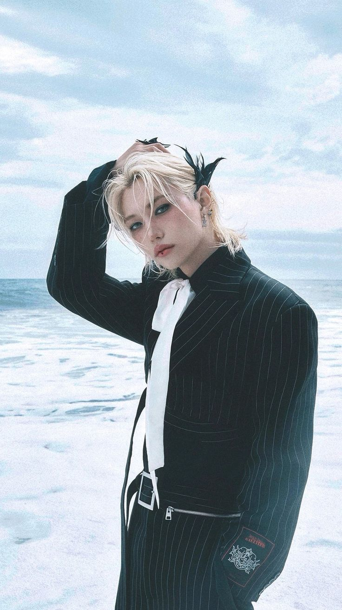
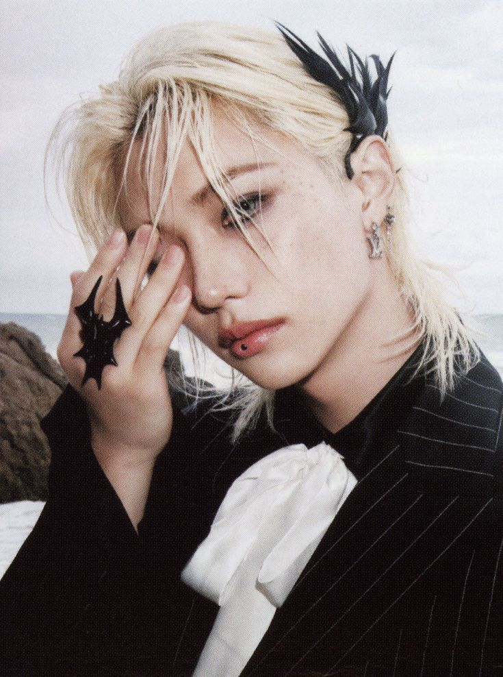
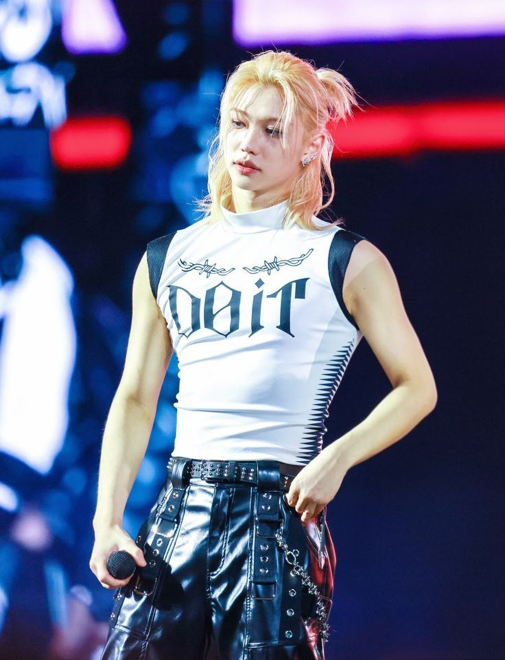

Felix
Perfil
Nombre: 필릭스 / フィリックス / Felix
Nombre real: Felix Lee
Nombre coreano: 이용복 / Lee Yong Bok
Apodos: Lix, Bokkie
Profesión:Rapero, Cantante, Bailarín, MC
Fecha de nacimiento: 15-Septiembre-2000 (25 Años)
Lugar de nacimiento:Sydney, Australia
Estatura: 171 cm
Peso: 56 kg
Tipo de sangre: AB
Signo zodiacal: Virgo
Signo zodiacal chino: Dragón
Familia:Padres, hermana mayor y hermana menor
Agencia: JYP Entertainment
Programas de TV
Pops in Seoul (Arirang) MC.
After School Club (Arirang TV, 25.12.2018) (Invitado Especial) Ep. 348
Stray Kids (Mnet, 2017)
Programa de Radio
(SBS) Power FM Young Street radio (15.04.2019) ( Junto a Hyun Jin, Han y Seung Min )
(SBS) Choi Hwajeongs Power Time (12.04.2019) (Junto a Bang Chan y Hyun Jin)
(SBS Radio) NCT Night Night (15.11.2018) (Junto a I.N, Seung Min, Han y Hyun Jin)
Anuncios musicales
NiziU - HEARTRIS (2023)
Colaboración de Videos musicales
Im Na Yeon - No Problem (Feat. Felix de Stray Kids) (2022)
Premios
2025 10th Asia Artist Awards: Grand Pressence of K-POP
Curiosidades
Estudios:Colegio Marista de San Patricio (Graduado)
Periodo de entrenamiento: 10 meses.
Especialidades: Taekwondo y Beatbox.
Hobbies: Escuchar música, bailar, ir de compras, la moda y el beatbox.
Idiomas: Inglés (Lengua materna), Coreano (Fluido), Francés (Básico).
Modelos a seguir:G-Dragon y Joey Badass.
Religión:Católico.
Es practicante de taekwondo y ha ganado numerosos premios en el deporte.
Fue aceptado como aprendiz en JYP Entertainment en febrero de 2017.
Fue eliminado del programa Stray Kids en el episodio 8. Al final del episodio 9, J.Y. Park
es dio a él y a Min Ho una nueva oportunidad para debutar junto a los demás si lo hacían bien
durante la presentación en vivo del último episodio.
Si no fuera idol, sería compositor de canciones.
Tiene 5 canciones con derechos de autor a su nombre en Según Korea Music Copyright Association.
Estuvo en la lista de los 100 rostros más hermosos del mundo en el 2018, quedando en el puesto número 43.
Se inscribió para ser patrocinador de la asociación Save The Children para mejorar la calidad de
vida de los niños más necesitados.
El 7 de marzo de 2023, la ONG (organización no gubernamental) internacional “Save the Children”
anunció que Félix ha sido nombrado miembro del “Club de Honores” por sus continuas donaciones.
imágenes




